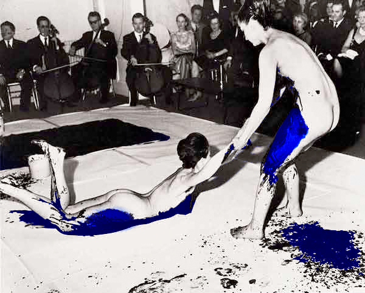

Open-ended consciousness¶
Minimalism¶
The origins of minimalism are contested.
“During this period of concentration, I created a monotone symphony whose theme expresses what I wished my life to be.” – Yves Klein
LaMonte Young was born in a log cabin in Bern, Idaho. As a child he was influenced by the droning sounds of the environment, such as blowing wind and electrical transformers.
According to Young himself, “Nobody ever took an interest in writing sustained tones without melodies over them before me.”
“What La Monte introduced was this concept of not having to press ahead to create interest. He would wait for the music to take its own course.”
Rave scene in the late 80s/early 90s¶
Chernobyl
Shelling of Russian parliament
Hubble space telescope
Dolly the sheep
Some notions about drugs - looking culturally that seems to be where the openness came from in the rave cultural explosion. Danger to breweries!
Confluence of free parties and promoters making money
New age travellers
Yuppies
Football hooligans
It was then suppressed and made less danger of an epidemic.
Technology part of the drivers, backdrop
Conceptions of time¶
Conceptions of time as a linear construct predominate today.

Developed from monotheistic religions with the idea of salvation as a process directed into the future.
The linear conception of time finds shape in the scientific-technological advances of modernity. The spring wound mechanical clock in the fourteenth century.
Newtonian physics establishes time as a quantifiable arrow of time. Time itself runs on and does not return.
However, notions of non-linear (periodic or cycical) time remain:
Human Body (heartbeat, respiration, sleep-wake cycle, circadian hormone secretion, among others)
Bantu culture
Nietzsche (western philosopher)
La Monte Young
The phenomenal sense of temporal continuity is periodic.